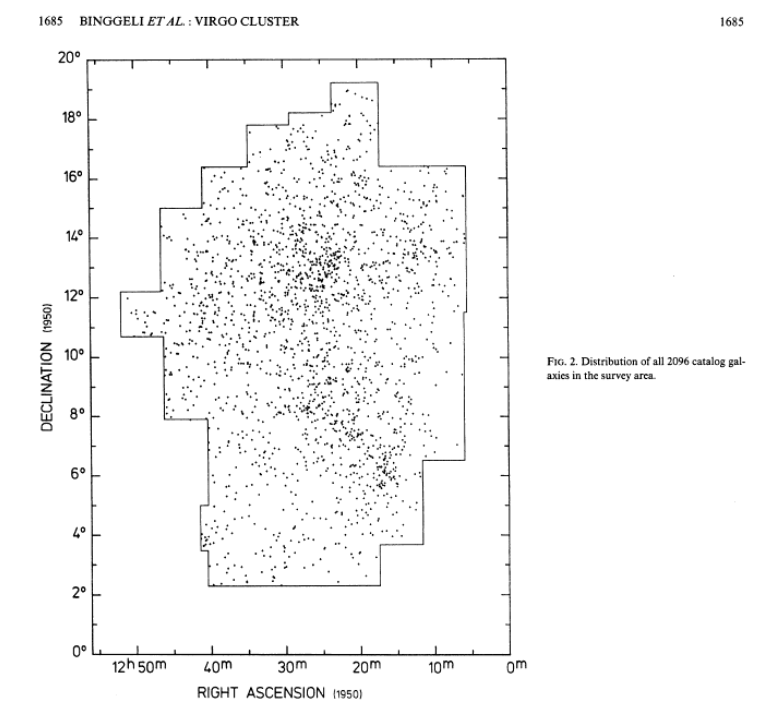

| R.A.(J2000) | |
| Dec.(J2000) | |
| Heliocentric radial velocity | |
| Recessional velocity in CMB rest frame | |
| Distance to the cluster (quoted in NED) | |
| Angular size corresponding to 2 Mpc | |
| Galactic latitude | |
| Galactic extinction in V-band | |
| Galactic extinction in I-band |
An important compilation of galaxies in the Virgo cluster was presented by
Binggeli, Sandage and Tammann
1985, Astron. J. 90, 1681 ( ADS link). Their Virgo Cluster Catalog (VCC) consists of 2096 galaxies which they believed,
based on examination of high quality photographic plates, are likely cluster members.
Note that their investigation of the cluster
was based on many fewer redshifts than are available today.
To the right is the sky distribution of possible cluster
members as appeared in their paper.
|
|
 From Figure 2 of Binggeli, Sandage & Tammann 1985 |